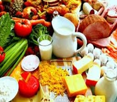
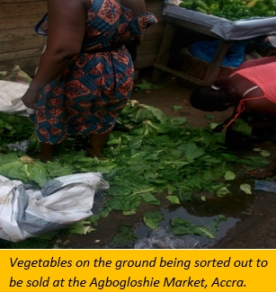
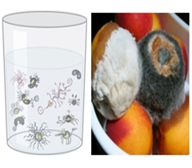
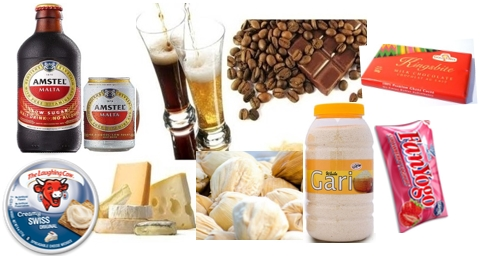
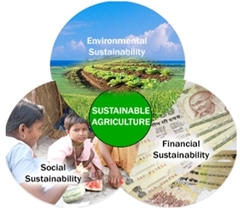

WHO WE ARE
We [FWFG] are a Non-Governmental Organisation which earnestly seek to uphold preventive health values and practices among the Ghanaian populace and policy makers, by promoting the adherence to acceptable food and nutritional tenets, use of safe drinking RESEARCH, TECHNICAL ADVICE, EDUCATION, ADVOCACY, CAPACITY BUILDING and VOLUNTEERISM.
'PREVENTIVE HEALTH' IS BETTER THAN 'CURATIVE HEALTH'
PREVENTIVE HEALTHCARE consists of measures taken for disease prevention, as opposed to disease treatment. According to World Health Organisation (WHO), millions of people worldwide become ill and thousands die from preventable food-borne illness annually.
A 2015 WHO report also indicates that diarrhoeal diseases caused 550 million people to fall ill and 230,000 deaths annually; African and South-East Asia Regions had the highest incidence and death rates, including children under the age of 5 years.
In Ghana, about 70% of all diseases are associated with unsafe water and poor sanitation services. Also, the number of recorded cholera cases rose from 9, 648 (in 2013) to 28, 976 (in 2014); latest available statistics.
A research at the Noguchi Memorial Institute for Medical Research in 2014, detected unacceptable levels of mycotoxins (poisonous substances) in home-made food (weanimix) for infants; this food meant to improve infants nutrition, rather expose them to adverse health implications with respect to immunity and growth.
On 30th October, 2017, over 50 students of the Ghana Senior High School in Koforidua were rushed for treatment at the St. Joseph's Hospital, following a food poisoning incident. In the same year, 4 people died in Alavanyo in the Volta Region from a suspected food poisoning event, after consuming a fish which looked like a puffer fish. The list goes on, and on.
Though there are many methods and approaches for the prevention of illness, consuming healthy wholesome food and safe water is among the critical interconnected approaches. Good nutrition and safe food can help prevent the incidence of some of these illness and promote good health.
Our vision & mission
OUR VISION
is to see a Ghanaian populace which highly uphold water conservation and preventive health practices.
OUR MISSION
- Educating and nurturing a positive attitude among the Ghanaian populace towards a good nutritional, water and sanitation practices.
- Encouraging the spirit of volunteerism in matters of environmental cleanliness, particularly among the youth.
- Influencing policy directions through research and advocacy.
- Promoting an efficient utilization and accountable management of food and water resources, and their relationship with improved human health.
OUR Core areas of interest
1. FOOD AND NUTRITION
2. FOOD SAFETY SYSTEMS
3. MICROORGANISMS OF FOOD AND WATER
4. SUSTAINABLE AGRICULTURE
5. WATER CONSERVATION, SANITATION AND HYGIENE

1. Food and nutrition
Food is any substance consumed to provide nutrients to an organism (human). Food is usually of plant or animal origin, and contains essential nutrients such as carbohydrates, fats, proteins, vitamins and minerals. Nutrition encompasses the interaction of nutrients and other substances in food, in relation to maintenance, growth, reproduction, health and disease of man.
Good nutrition can help prevent many diseases and promote good health. A poor diet can cause slower immune response which increases the risk of getting infections; deficiency diseases such as blindness, anemia, scurvy, preterm birth, stillbirth and cretinism; health-threatening conditions like obesity and metabolic syndrome; and chronic systemic diseases as cardiovascular disease, diabetes, and osteoporosis. A poor diet can cause kwashiorkor in acute cases, and the stunting of marasmus in chronic cases of malnutrition.
Obviously, the need to eat right cannot be overemphasised!

2. FOOD SAFETY SYSTEMS
A food system includes all processes and infrastructure involved in feeding a population: growing, harvesting, storing, processing, packaging, transporting, marketing, consumption, and disposal of food and food-related items.
It also covers the governance and economics of food production, its sustainability, the degree to which we waste food; how food production affects the natural environment, and in what way does food affects our health and well-being, including nutrition, obesity and food safety.
Food safety comprises of handling, preparation, and storage of food in ways that prevent food borne illness. Food safety considerations include the origins of food including the practices relating to food labeling; food hygiene; food additives and pesticide residues; and food biotechnology.
Food safety system thus ensures that along the entire food chain, from farm to fork, food produce are wholesome, safe for consumption and serve their intended nutritional purposes.
An improperly functioning food safety system could have adverse effects on: access to healthy and affordable food; nutrition; trade (especially international trade) and economic development; traceability of food produce; transparency in food production from farmers to consumers; and among others.

3. MICROORGANISMS OF FOOD AND WATER
Microorganisms such as bacteria have caused more human deaths on Earth than any other known cause, throughout history, directly through the diseases of cholera, dysentery, meningitis, measles, pneumonia, scarlet fever, tuberculosis, etc.
Plant diseases also reduce the quantity and quality of food. Some pathogenic foodborne and waterborne microorganisms produce toxins that posse grave health problems (such as liver and kidney damage; reproductive disorders; diarrhea; immune system suppression; cancer development, and death) to consumers. Often, money meant for development projects is diverted into the management of human and plant diseases.
However, many microorganisms are useful; they provide many essential services to man such as development of commercial products including diverse antibiotics (for disease control), microbial enzymes, insecticides, vitamins, organic and amino acids; for the production of foods such as 'kenkey', 'meda', cheese, yogurt, bread, beer, wine and other fermented foods. 
Some microorganisms perform important services related to water dynamics, nutrient cycling and disease suppression.
Unfortunately, the valuable roles of microorganisms are not easily appreciated by many people. These beneficial roles therefore ought to be recognized and their usefulness in our lives, pursued.

4. SUSTAINABLE AGRICULTURE
Many Ghanaians would prefer eating 'natural' healthy foods that are free of chemicals and other contaminants. Unfortunately, the majority of food we consume fall short of these preferences.
Sustainable agriculture does not rely heavily on a variety of agro-chemicals and artificial enhancements, such as pesticides, chemical fertilizers, antibiotics and genetically modified organisms. .
It focuses on long-term production of crops and livestock which has insignificant adverse effects on the environment. Sustainable agriculture promotes methods and farming practices that are economically viable, environmentally sound and protect public health. It strives to find a good balance between the need for healthy food production and preservation of the environment. This reduces the risk of people becoming ill from exposure to such harmful agro-chemicals. In addition, the crops produced are usually more nutritious.
Although there are many benefits to sustainable agriculture, it commonly does not produce as much food as industrialized agriculture, and produce are often sold to consumers at higher prices. FWFG hopes to play her role in mitigating these challenges associated with sustainable agriculture in Ghana.

5. WATER CONSERVATION, SANITATION AND HYGIENE
Adequate potable water supply is a prerequisite for human and environmental health, and improving upon this service will bring immeasurable gains.
However, fresh water resources in many regions, including Ghana, are simultaneously coming under increasing pressure from factors such as pollution, population growth and climate change. WASH experts have stated that without progress on Goal #6 (i.e. access to Clean Water and Sanitation), the other 16 goals and targets cannot be achieved.
In Ghana, about 24% of urban dwellers have no access to potable water, and 70% of all diseases in Ghana are caused by unsafe water and poor sanitation services. Globally, unsafe water, along with food, is implicated in 3 million deaths, and about 2.4 billion episodes of illness annually.
Any beneficial prevention/reduction in the wastage of water and resources wastage; avoiding damage to quality of water sources such as rivers, lakes; and improving water management practices that enhances the judicious use of water, are highly encouraged.
For instance, contamination of groundwater by leachate from septic tanks [an emerging trend of water resource destruction] renders it unsafe for human use, and the natural regeneration of such contaminated groundwater can take several years. .
Through public education and awareness creation, the Ghanaian populace will be best informed and sensitized on the need to uphold good water conservation, sanitation and hygienic practices.